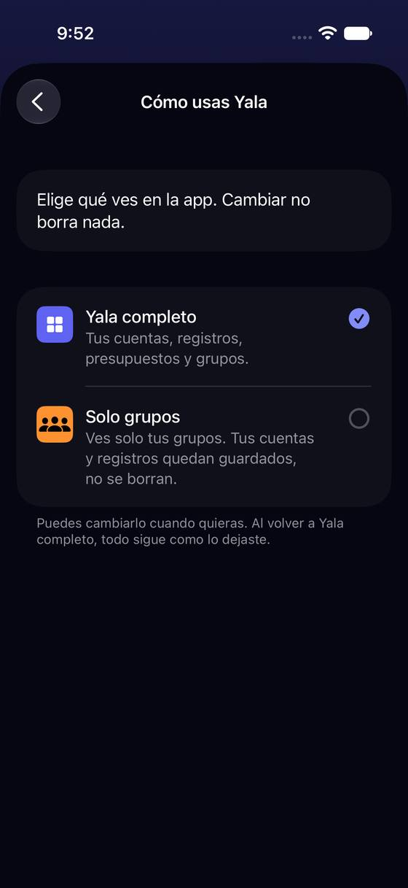
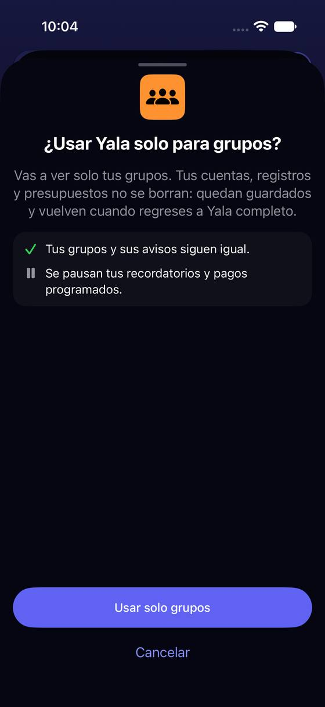
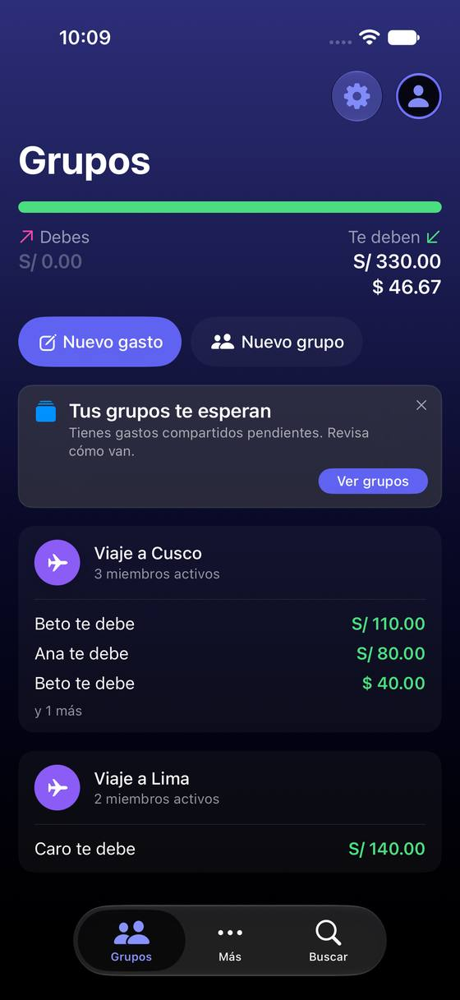

«Cómo usas Yala» y «Modo de uso» son dos cosas distintas en dos sitios
Hoy
Capturas del simulador (app de origin/2.3, semillas de prueba). Pasos hoy: activar Solo gastos: 3 toques (avatar › Personalización › interruptor), en un sitio que no se llama «Cómo usas Yala»




De dónde sale
- Captura Capturas g01 y g02.
- Código
PersonalizationSettingsView:sectionUsageMode= «Modo de uso» con «Solo gastos»;UsageModeSettingsView= «Cómo usas Yala». - Código
.claude/rules/swiftui-ds.md: «Solo grupos» tiene dos orígenes (sin sesión privada o elegido en «Cómo usas Yala»).
Las opciones
De 3 a 5 alternativas con el mismo caso. Desliza cada recorrido; el anillo cian marca dónde toca Andrea.
«Cómo usas Yala» junta los tres modos en una pantalla
«Cómo usas Yala» ya existe en la raíz de Ajustes con Yala completo / Solo grupos. «Solo gastos» (hoy en Personalización › Modo de uso) se muda ahí, como un interruptor debajo de «Yala completo», porque solo tiene sentido con él. Personalización deja de tener «Modo de uso».
A favor
- Quien busca «modo» lo encuentra en un sitio.
- La fila de Ajustes dice el modo de verdad.
- Personalización pierde su primera sección, la que menos tenía que ver con «personalizar».
En contra
- El aviso de «¿Activar modo solo gastos?» se mueve con él.
- Hay que decidir qué pasa con «Solo gastos» en Solo grupos (nada).
Tres opciones al mismo nivel: Completo, Solo gastos, Solo grupos
Las tres formas de usar Yala, como tres tarjetas iguales en «Cómo usas Yala». «Solo gastos» pasa de interruptor a opción, y su explicación dice para quién es («Si solo quieres apuntar lo que gastas»).
A favor
- Una sola elección, fácil de explicar en el onboarding también.
- El perfil P3 (anotador rápido) se ve reconocido.
En contra
- «Solo gastos» y «Solo grupos» no son exclusivos en el código (uno es un filtro, el otro una shell): mezclarlos en una sola elección esconde una combinación que hoy existe.
- Cambia la pregunta del onboarding si se quiere coherente.
Se quedan donde están, con un puente entre los dos
Mínimo: en «Cómo usas Yala» una línea al pie («¿Solo quieres ver tus gastos? Está en Personalización › Solo gastos ›») y en Personalización la sección pasa de «Modo de uso» a «Qué cifras ves».
A favor
- Solo texto y un enlace.
- No toca la lógica de los modos.
En contra
- Siguen siendo dos sitios.
- El nombre «Modo de uso» se quita, pero la sección de Personalización sigue mezclando.
Lado a lado
La última pantalla de cada recorrido, frente a hoy.
Comparación
| Opción | Pasos para el caso (maqueta) | Esfuerzo | Riesgo | Reabre |
|---|---|---|---|---|
| Hoy | activar Solo gastos: 3 toques (avatar › Personalización › interruptor), en un sitio que no se llama «Cómo usas Yala» | — | — | — |
| F1 · «Cómo usas Yala» junta los tres modos en una pantalla | Activar Solo gastos: 3 toques (hoy 3, pero en otro sitio que no se adivina) | bajo | bajo | — |
| F2 · Tres opciones al mismo nivel: Completo, Solo gastos, Solo grupos | Activar Solo gastos: 3 toques | medio | medio | «Cómo usas Yala» (p0iu) |
| F3 · Se quedan donde están, con un puente entre los dos | Igual que hoy | bajo | bajo | — |
Lente de perfiles
Perfiles simulados, no entrevistas Los siete perfiles de la revisión del usuario nuevo, usados como lentes. riesgo alto de trabarse · medio · bajo.
| Perfil | Hoy | F1 | F2 | F3 |
|---|---|---|---|---|
| P1 · Migrante de Excel | — | — | — | — |
| P2 · Principiante abrumado | dos nombres iguales | un sitio | tres opciones | dos sitios |
| P3 · Anotador rápido que no lee | su modo, escondido | su modo, arriba | su opción | — |
| P4 · Experto de otra app | — | — | pierde la combinación | — |
| P5 · Llega por una invitación de grupo | — | ve Solo grupos | — | — |
| P6 · Varias monedas y tarjeta | — | — | — | — |
| P7 · Texto grande, a veces en iPad | — | — | — | — |
Recomendación: F1
Juntar «Solo gastos» como interruptor dentro de «Cómo usas Yala» pone las dos maneras de recortar la app en un solo sitio sin cambiar cómo funcionan. F2 es más limpia de leer pero esconde una combinación que hoy existe; F3 es el parche mínimo.
Qué decide Jürgen
- ¿«Solo gastos» se muda a «Cómo usas Yala» como interruptor (F1) o como tercera opción (F2)?
Revisión por vistas 2.3 · Perfil, Más, Ajustes generales, Pro y ayuda. Maquetas en HTML con datos ficticios: no son la app. Pasos contados sobre las maquetas; los de «Hoy», en el simulador o en el código citado.